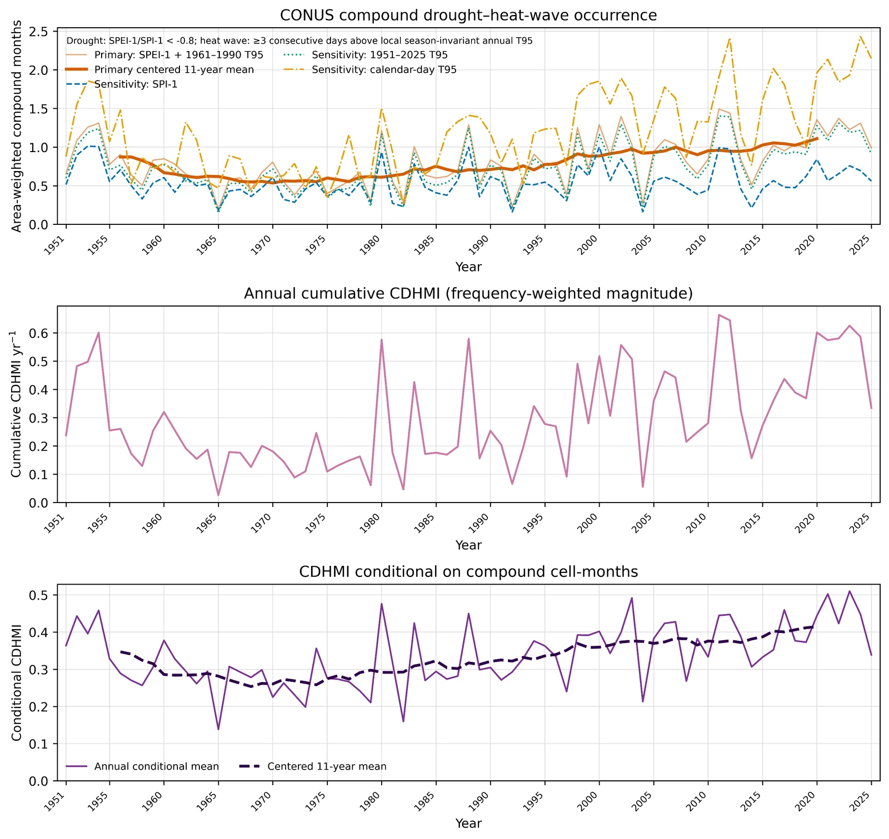
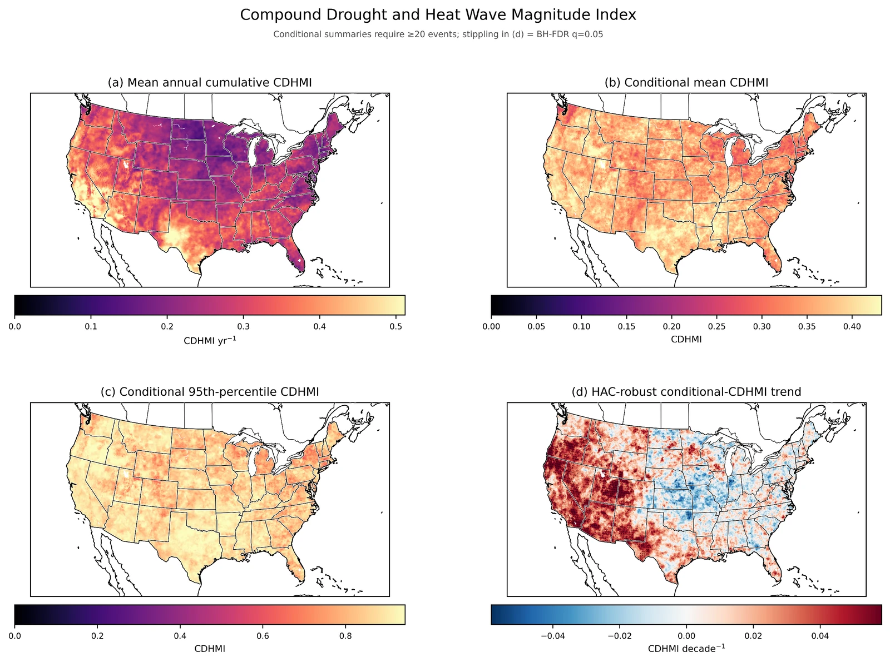

When drought and heat waves occur together
A 75-year observational analysis of compound drought–heat-wave occurrence, severity, and sensitivity to event definitions.
- Record
- 1951–2025
- Coverage
- CONUS
- Data
- nClimGrid-Daily
- Focus
- Compound events
The question
Where are drought and heat waves intensifying together?
This research uses NOAA nClimGrid-Daily observations to examine the frequency, magnitude, and regional structure of compound drought and heat waves across the contiguous United States.
Data & methods
A closer look at
the approach.
The primary definition combines one-month SPEI below −0.8 with heat waves lasting at least three consecutive days above the local 95th-percentile maximum-temperature threshold for 1961–1990. A compound month includes both drought and at least one heat-wave day. Sensitivity analyses compare SPEI with precipitation-only SPI and test alternative temperature reference periods.
Findings & context
What the work shows.
- Preliminary results indicate that the strongest long-term increases are concentrated in the western United States.
- The choice of drought metric changes estimated compound-event frequency substantially, illustrating why event definitions need to be explicit.
- Spatial trends, seasonal cycles, and a standardized compound magnitude index provide complementary views of changing drought–heat exposure.
Research in progress. Results and manuscript details may change as the analysis is refined.
From the analysis
Research figures.
Select a figure to view it larger.
{kind=link}


{kind=link}
